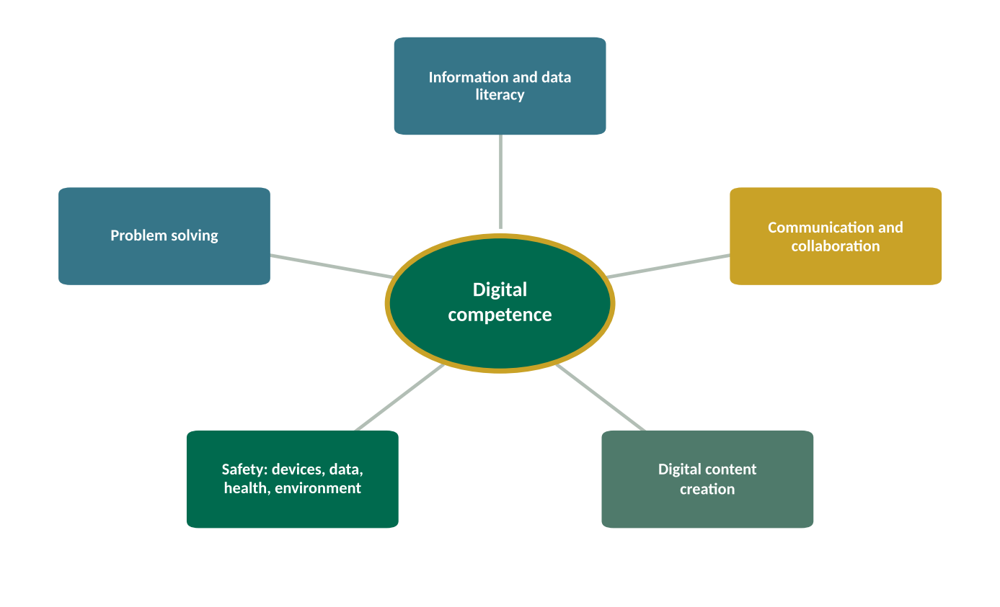
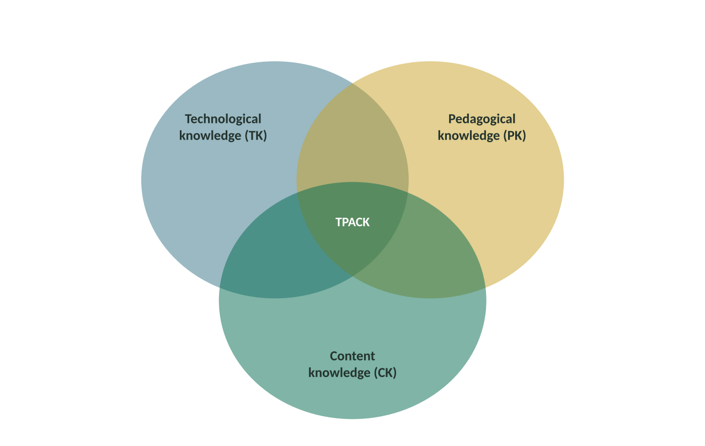
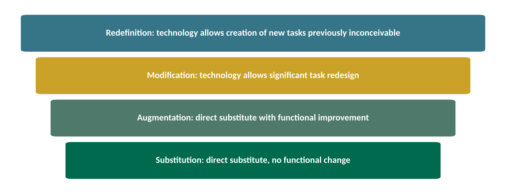
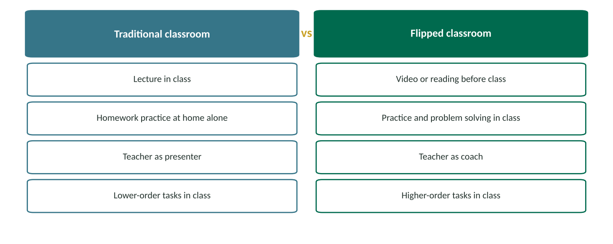
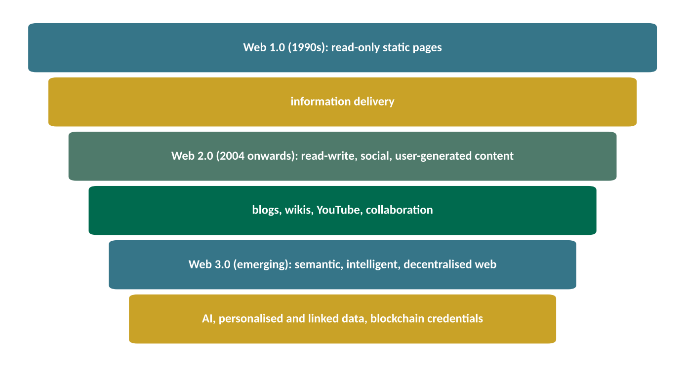
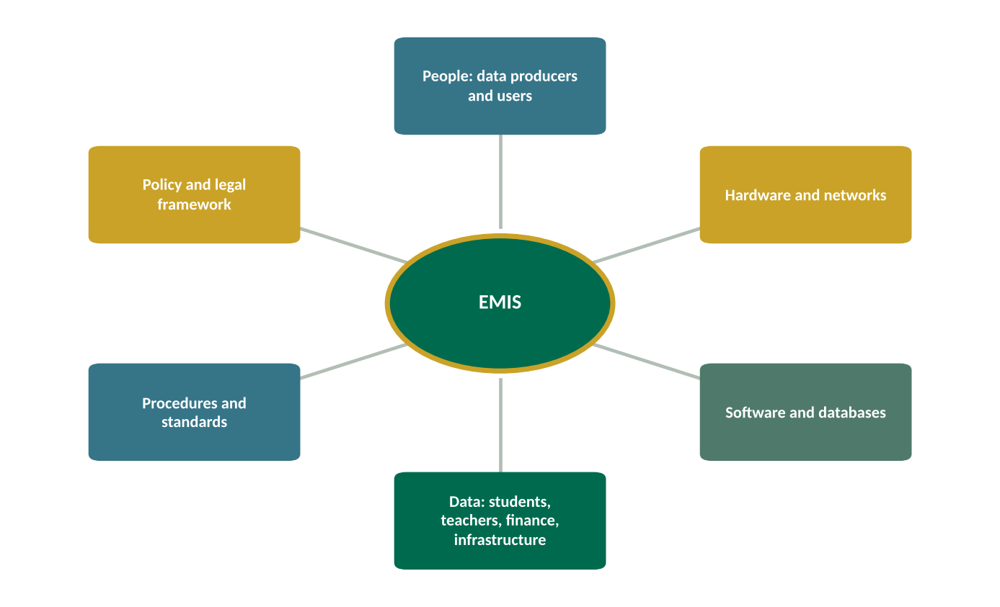
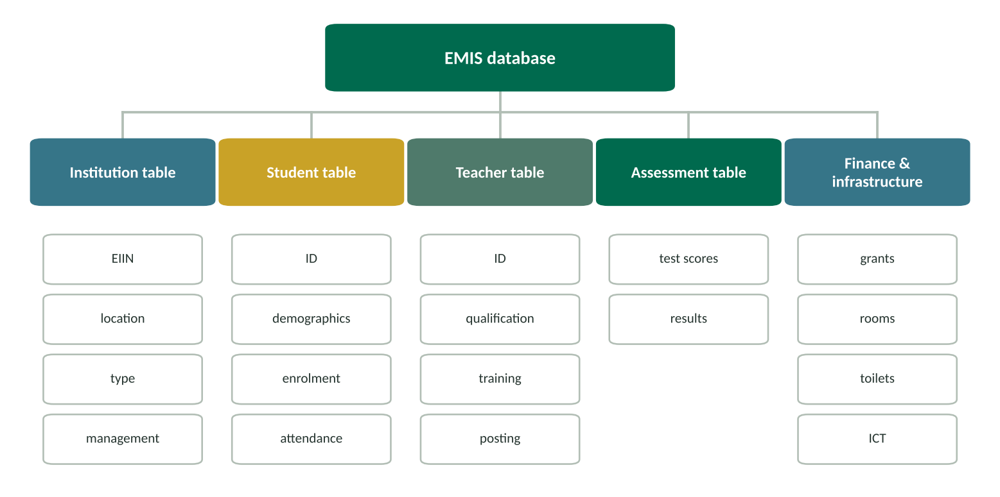
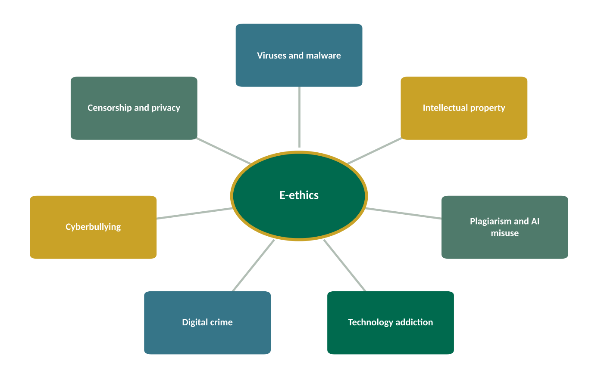

ED 503 Information and Communication Technology in Education
ICT concepts and models, ICTE in Bangladesh, internet-assisted learning, EMIS, e-ethics and law, with hands-on lab guides
Contents
About this course
Information and Communication Technology in Education (ICTE) is no longer an optional extra. COVID-19 school closures, the spread of smartphones, artificial intelligence and national digital agendas have made digital competence a core professional requirement for teachers, administrators and teacher educators. Yet technology improves learning only when it is guided by sound pedagogy, equitable access and ethical use.
ED 503 introduces the concepts and models of ICTE (Unit 1), reviews ICTE policy and practice in Bangladesh against the global picture (Unit 2), explores internet and technology-assisted learning, including cloud, flipped and open educational resources (Unit 3), introduces Educational Management Information Systems (Unit 4), and examines ethical and legal issues (Unit 5). Unit 6 provides laboratory guides for Google Classroom and Forms, tutorial development, gamification and online courses, and basic website development. Since practicals carry 40% of the marks, the lab guides are written so that a lecturer can teach directly from them.
Course objectives
Develop a clear understanding of the concept and importance of ICTE and the relationship between data, information, communication and education.
Understand the social, ethical and legal issues related to ICTE.
Develop positive attitudes towards using technology and the internet in teaching, learning and professional development.
Acquire skills in preparing lesson-based tutorials and digital assessments with ICT.
Identify the facilities and possibilities of ICTE in Bangladesh in comparison with global perspectives.
Plan and operate an Educational Management Information System for an institution.
Contents
01 Unit 1: ICT Today: An Overview
02 Unit 2: ICTE in Bangladesh
03 Unit 3: Internet and Technology Assisted Learning in Education
04 Unit 4: Educational Management Information System (EMIS)
05 Unit 5: Ethics and Laws of ICTE
06 Unit 6: Practical (Laboratory Guides)
07 Exam Preparation Bank
08 References
Each unit follows the official M.Ed syllabus order. Read the narrative first, then the boxes, then test yourself with the Exam focus questions.
Teal boxes = definitions and study tips. Golden boxes = must-remember ideas and exam focus. Green boxes = Bangladesh context. Ash boxes = critical perspectives expected at Master's level. Amber Verify before use boxes mark policy facts and statistics that change: check them against the latest BANBEIS, MoE, DPE, NCTB, UGC, UNESCO or World Bank sources before an exam.
The final chapter is a question bank (MCQs with answers, short and broad questions) in the style of university examinations, followed by full references in APA 7th style.
Unit 1: ICT Today: An Overview
1.1 Data, information, knowledge and communication
Understanding ICT begins with the difference between data and information. Data are raw, unprocessed facts (marks, attendance ticks, numbers). Information is data processed into a meaningful form (a class average, an attendance rate). Knowledge is information understood and applied in context, and wisdom is the judicious use of knowledge.

Figure 1. The DIKW hierarchy (after Ackoff, 1989)
Communication is the process of sharing information and meaning between senders and receivers through a channel. Education is a structured communication process in which teachers and learners exchange, construct and evaluate knowledge. ICT therefore sits at the intersection of all four: it captures data, processes it into information, communicates it, and supports the construction of knowledge.
1.2 IT, ICT and ICTE
Information Technology (IT): The use of computers, storage, networking and other physical devices, infrastructure and processes to create, process, store, secure and exchange electronic data.
Information and Communication Technology (ICT) (UNESCO): "A diverse set of technological tools and resources used to transmit, store, create, share or exchange information", including computers, the internet, live broadcasting (radio, television), recorded broadcasting (podcasts, audio and video players) and telephony (fixed, mobile, video-conferencing).
ICT in Education (ICTE): The use of ICT to support, enhance and transform teaching, learning, assessment, educational management and teachers' professional development. ICTE covers both learning about ICT (ICT as a subject) and learning with/through ICT (ICT as a tool across subjects).
| Aspect | IT | ICT | ICTE |
|---|---|---|---|
| Focus | Computing and data processing | Information processing plus communication | Educational use of ICT |
| Components | Hardware, software, data, networks | IT plus telecommunications, broadcast media, internet | ICT plus pedagogy, curriculum, management |
| Typical users | IT professionals, organisations | Everyone | Teachers, learners, administrators |
| Example | Database server | Mobile phone, internet, TV | Online class, EMIS, digital content |
Table 1. IT, ICT and ICTE compared
1.3 Information literacy and digital literacy
Information literacy (ALA, 1989): "To be information literate, a person must be able to recognize when information is needed and have the ability to locate, evaluate, and use effectively the needed information."
The ACRL Framework for Information Literacy for Higher Education (2016) presents six frames: authority is constructed and contextual; information creation as a process; information has value; research as inquiry; scholarship as conversation; and searching as strategic exploration.
Digital literacy is broader: the ability to use digital technologies to find, evaluate, create and communicate information, requiring both cognitive and technical skills. The European DigComp 2.2 framework (2022) defines five areas: information and data literacy; communication and collaboration; digital content creation; safety; and problem solving. UNESCO's Digital Literacy Global Framework (2018) adds devices and software operations and career-related competences.

Figure 2. Five competence areas of DigComp 2.2
1.4 Blended learning
Blended learning (Garrison & Kanuka, 2004): "The thoughtful integration of classroom face-to-face learning experiences with online learning experiences."
| Model | Description | Example |
|---|---|---|
| Station rotation | Students rotate among stations, at least one online | In a Grade 6 science class, groups rotate between experiment, teacher-led and tablet quiz stations |
| Lab rotation | Rotation to a computer lab for the online component | Weekly ICT lab session for practice |
| Flipped classroom | Content learned online at home; class time for practice and discussion | Students watch a 10-minute video on photosynthesis; class does experiments |
| Individual rotation | Personalised schedule across modalities | Adaptive software sets each learner's path |
| Flex | Online is the backbone; teachers give flexible face-to-face support | Online degree with optional tutorials |
| A la carte | Learners take some courses entirely online | A university student takes one MOOC for credit |
| Enriched virtual | Mostly online with required occasional face-to-face sessions | Open university tutorials (BOU) |
Table 2. Models of blended learning (Staker & Horn, 2012)
1.5 The TPACK model
Mishra and Koehler (2006), building on Shulman's (1986) pedagogical content knowledge (PCK), proposed Technological Pedagogical Content Knowledge (TPACK): effective technology integration requires teachers to understand the complex interplay of three primary knowledge bases.

Figure 3. The TPACK framework (Mishra & Koehler, 2006)
| Domain | Meaning | Example (Grade 8 geometry) |
|---|---|---|
| CK | Knowledge of subject matter | Properties of triangles |
| PK | Knowledge of teaching and learning methods | Inquiry learning, questioning |
| TK | Knowledge of technologies | Using GeoGebra |
| PCK | Teaching particular content effectively | Using paper folding to discover angle sum |
| TCK | How technology represents content | Dynamic geometry shows angle sum stays 180° as the triangle changes |
| TPK | How technology changes teaching | Using online polls for formative assessment |
| TPACK | Integrated knowledge of using technology to teach specific content with appropriate pedagogy | Students explore triangles in GeoGebra, conjecture, then justify in groups |
Table 3. The seven knowledge domains of TPACK
TPACK's central message is that technology integration is not a generic skill. A teacher who can operate PowerPoint (TK) is not automatically able to teach mathematics better with it. The surrounding circle in the diagram represents context (school, students, culture), which Mishra (2019) relabelled as contextual knowledge (XK).
Other integration models
| Model | Levels / components | Use |
|---|---|---|
| SAMR (Puentedura, 2006) | Substitution, Augmentation, Modification, Redefinition | Judging how far technology transforms a task |
| RAT (Hughes) | Replacement, Amplification, Transformation | Similar to SAMR |
| ICT-CFT (UNESCO, 2018) | Three levels: knowledge acquisition, knowledge deepening, knowledge creation across six aspects | Teacher competency standards |
| TAM (Davis, 1989) | Perceived usefulness and perceived ease of use predict technology acceptance | Research on teachers' adoption |
| Rogers's diffusion of innovations (1962) | Innovators, early adopters, early majority, late majority, laggards | Planning ICT roll-out |
Table 4. Models of technology integration

Figure 4. The SAMR model (Puentedura, 2006)
1.6 Basics of e-education
E-education (e-learning) is learning facilitated and supported through ICT. Key concepts:
Synchronous (real time: live classes on Zoom/Meet) versus asynchronous (anytime: recorded videos, discussion forums).
Learning Management System (LMS): software for delivering, tracking and managing learning (Moodle, Google Classroom, Canvas, Blackboard).
Virtual Learning Environment (VLE) and Massive Open Online Courses (MOOCs).
E-content: text, audio, video, simulations, interactive modules.
E-assessment: online quizzes, e-portfolios, automated feedback.
Learning analytics: measurement and analysis of data about learners to understand and optimise learning.
1.7 Scope and challenges of ICT integration in education
| Area | Applications |
|---|---|
| Teaching and learning | Multimedia presentation, simulations, virtual labs, online collaboration, adaptive learning, AI tutors |
| Assessment | Online tests, item banks, plagiarism detection, e-portfolios, learning analytics |
| Administration | EMIS, admission, timetables, results processing, finance, HR |
| Teacher development | Online CPD, MOOCs, communities of practice, video-based coaching |
| Access and inclusion | Distance education, assistive technology (screen readers, text-to-speech), sign-language video |
| Research | Databases, reference managers, statistical software, open access |
| Communication | School websites, SMS to parents, social media |
Table 5. Scope of ICT in education
| Type | Barriers |
|---|---|
| First-order (external) | Lack of devices, electricity, internet, technical support, time, funding, content in Bangla |
| Second-order (internal) | Teachers' beliefs, attitudes, confidence, resistance to change, pedagogical knowledge |
| Systemic | Exam-driven curriculum, lack of policy coherence, weak monitoring, maintenance and replacement costs |
| Equity | Digital divide by income, gender, location and disability |
| Safety and ethics | Cyberbullying, privacy, misinformation, addiction |
Table 6. Challenges of ICT integration (first- and second-order barriers, Ertmer, 1999)
1.8 Mobile learning
Mobile learning (UNESCO, 2013): "Mobile learning involves the use of mobile technology, either alone or in combination with other ICT, to enable learning anytime and anywhere."
UNESCO's Policy Guidelines for Mobile Learning (2013) list benefits such as expanding reach and equity, facilitating personalised learning, providing immediate feedback, enabling anytime-anywhere learning, supporting situated learning and building bridges between formal and informal learning. Challenges include small screens, distraction, cost of data, privacy and unequal access, especially for girls.
In Bangladesh, mobile phone penetration is very high and mobile internet is the main mode of internet access. During COVID-19, mobile-based learning (Muktopaath, 10 Minute School, Facebook Live classes, and the 333 call-based support) and feature-phone-based interactive voice response complemented TV and radio lessons.
Likely questions: "Distinguish IT, ICT and ICTE." "What is TPACK? Explain its seven components with examples." "Discuss the SAMR model." "Explain the models of blended learning." "What are the first- and second-order barriers to ICT integration?"
Unit 2: ICTE in Bangladesh
2.1 ICTE in global and local perspective
Globally, ICTE has moved through phases: computer-assisted instruction (1960s to 1980s), multimedia and the internet (1990s), Web 2.0 and one-to-one device programmes (2000s, e.g., One Laptop Per Child), mobile and cloud learning (2010s), and emergency remote teaching and AI (2020s). UNESCO's GEM Report 2023, Technology in Education: A Tool on Whose Terms?, warns that evidence on technology's added value is thin and context-dependent, that technology should be used only where it improves learning, and that one in four countries had banned smartphones in schools.
| Aspect | Global trends | Bangladesh situation (indicative) |
|---|---|---|
| Infrastructure | Near-universal school connectivity in high-income countries; Giga initiative (UNICEF-ITU) to connect every school | Electricity in most schools; connectivity uneven; multimedia classrooms in many secondary schools |
| Policy | National digital education strategies; AI guidance (UNESCO 2023) | ICT Policy 2018; ICT in Education Master Plan; Smart Bangladesh 2041 |
| Teacher competency | UNESCO ICT-CFT; DigCompEdu (EU) | Teacher ICT training through a2i, NAEM, TTCs, MoE projects |
| Content | OER, MOOCs, adaptive platforms | Shikkhok Batayon, Muktopaath, Kishore Batayon, digital textbooks (NCTB e-books) |
| Assessment | Computer-based testing, analytics | Online admission, result publication; limited CBT |
| Equity | Digital divide persists globally | Urban-rural, gender and income divides; COVID-19 exposed gaps |
Table 7. Global and local perspectives on ICTE
Figures on multimedia classrooms, digital labs and connectivity change annually; check a2i, DSHE and BANBEIS for current numbers.
2.2 Review of national policies on ICT integration in education
| Policy / initiative | Year | ICTE provisions |
|---|---|---|
| National ICT Policy | 2002, 2009, 2015, 2018 | ICT in education as a strategic theme: ICT literacy, digital content, teacher training, multimedia classrooms, ICT in exams and administration |
| Digital Bangladesh vision | 2008/2009 | Four pillars: human resource development, connecting citizens, digital government, ICT in business; education central to the first pillar |
| National Education Policy | 2010 | ICT as compulsory subject at secondary; ICT in teacher training; computer labs; digital content |
| ICT in Education Master Plan | 2012 to 2021 | Eight components incl. ICT-based teaching-learning, teacher development, digital content, assessment, infrastructure, EMIS, monitoring |
| Digital Security Act | 2018 | Regulation of digital content (replaced by the Cyber Security Act 2023) |
| Blended Education Master Plan / blended learning policy | 2022 onwards | Post-COVID strategy for blended education across levels (MoE draft) |
| Smart Bangladesh vision | 2022 to 2041 | Smart citizen, smart government, smart economy, smart society: digital skills and AI |
| National Strategy for Artificial Intelligence | 2019 (draft 2024 revision) | AI education and research |
Table 8. Major national policies and initiatives relevant to ICTE
The status of the Blended Education Master Plan, the AI strategy revision, and any renaming or revision of the Digital/Smart Bangladesh agenda after 2024 should be checked with the ICT Division and Ministry of Education.
2.3 Current practices of ICTE by government and NGOs
Government initiatives
a2i (Aspire to Innovate), formerly Access to Information, under the ICT Division and Cabinet Division with UNDP support: drove multimedia classrooms, teacher-led content development and digital services.
Multimedia Classrooms (MMC): laptop, projector, internet modem and speakers provided to secondary and primary schools; teachers trained to develop digital content.
Shikkhok Batayon (Teachers' Portal): an online platform where teachers share and rate digital content; recognised internationally.
Muktopaath: a Bangla e-learning platform for free online courses, including teacher professional development and skills courses.
Kishore Batayon (Konnect): an edutainment portal for adolescents.
Sheikh Russel Digital Labs and School of Future (ICT Division): computer labs in secondary institutions; some have been renamed after 2024.
ICT as a compulsory subject at secondary and higher secondary levels; ICT teachers recruited for some schools.
Sangsad TV "Amar Ghore Amar School" and Bangladesh Betar lessons during COVID-19.
Bangladesh Open University (BOU): TV, radio and online distance programmes; BOU's e-learning platform.
Online admission and results: college admission (XI class) online; result publication via SMS and web.
BdREN: Bangladesh Research and Education Network connecting universities.
NGO and private initiatives
BRAC: BRAC IED, digital literacy, computer-aided learning in BRAC schools; online learning during COVID-19.
JAAGO Foundation: online schools connecting urban teachers with rural classrooms.
10 Minute School: large private online learning platform with free and paid content.
D.Net, Save the Children, UNICEF: digital content, mobile learning, Rohingya learning centres.
Telecom operators: zero-rated educational content during COVID-19.
Names and status of government labs and portals (e.g., Sheikh Russel Digital Labs, Kishore Batayon) may have changed after August 2024; confirm current names before an exam.
Research on multimedia classrooms in Bangladesh found that they increased student attention and teacher motivation, but often amounted to substitution in SAMR terms (slides replacing the board), with limited interactive or student-centred use, frequent equipment breakdowns, and insufficient time for teachers to prepare content.
2.4 Relationship between ICTE curriculum and instruction
ICT appears in the curriculum in two ways: as a subject (ICT curriculum for Grades 6 to 12, digital technology in the 2021 framework) and as a cross-curricular tool. Synchronising curriculum and instruction requires:
Alignment of curriculum objectives, ICT tools and assessment (constructive alignment, Biggs).
Teacher guides that show how to use technology for particular content (TPACK).
Time in the timetable for lab work.
Assessment that rewards ICT-enabled skills (projects, portfolios), not only written exams.
Professional development in pedagogy, not just in operating devices.
2.5 Future modalities of ICTE in Bangladesh

Figure 5. Future modalities of ICTE in Bangladesh
Technology-led reforms often fail when they are hardware-centred (buy devices first, think about pedagogy later), lack maintenance budgets, or ignore teachers' workload. Cuban's (2001) Oversold and Underused showed that computers in US schools were rarely used to change teaching. The 2023 GEM Report urges asking: is it appropriate, equitable, scalable and sustainable?
Expect: "Review the national ICT policies regarding ICT integration in education in Bangladesh." "Evaluate the multimedia classroom initiative." "Compare ICTE in Bangladesh with global trends." "Suggest future modalities of ICTE in Bangladesh."
Unit 3: Internet and Technology Assisted Learning in Education
3.1 Technology as a tool in education
Jonassen (1996) distinguished learning from computers (computers as tutors delivering instruction) and learning with computers (computers as mindtools that learners use to construct knowledge: databases, spreadsheets, concept maps, simulations). Contemporary practice emphasises technology as a tool for active, collaborative, constructive, authentic and reflective learning.
3.2 Distance education and cloud-based learning
Distance education (Moore & Kearsley, 2012): "Teaching and planned learning in which teaching normally occurs in a different place from learning, requiring communication through technologies as well as special institutional organization."
Distance education has evolved through generations: correspondence; broadcast radio and TV; teleconferencing; computer-based and internet learning; and online, mobile and AI-supported learning. Moore's theory of transactional distance argues that the psychological distance between teacher and learner depends on dialogue, structure and learner autonomy.
Cloud computing delivers computing services (storage, software, platforms) over the internet. Models: SaaS (software as a service, e.g., Google Workspace), PaaS (platform), IaaS (infrastructure). In education, cloud tools allow real-time collaboration (Google Docs), storage (Drive, OneDrive), and LMS access from any device.
| Advantages | Limitations |
|---|---|
| Access from anywhere and any device | Requires reliable internet |
| Real-time collaboration | Data privacy and ownership concerns |
| Automatic updates, low local maintenance | Dependence on vendors |
| Scalable and often free for education | Account management for minors |
| Easy sharing of resources | Digital literacy needs |
Table 9. Advantages and limitations of cloud-based learning
3.3 Educational provisions through the internet
Google Classroom
Google Classroom is a free LMS within Google Workspace for Education that lets teachers create classes, share materials, assign and grade work, give feedback and communicate with students. Features include Stream, Classwork, People and Grades tabs; integration with Docs, Forms, Meet and Drive; originality reports; and rubrics.
Flipped learning
Flipped learning (Flipped Learning Network, 2014): "A pedagogical approach in which direct instruction moves from the group learning space to the individual learning space, and the resulting group space is transformed into a dynamic, interactive learning environment where the educator guides students as they apply concepts and engage creatively in the subject matter."
The four pillars of flipped learning (F-L-I-P): Flexible environment, Learning culture (learner-centred), Intentional content, Professional educator. Bergmann and Sams (2012) popularised the approach.

Figure 6. Traditional and flipped classroom
Web 1.0, 2.0 and 3.0

Figure 7. Evolution of the web and its educational uses
Open Educational Resources (OER)
Open Educational Resources (UNESCO, 2019 Recommendation): "Learning, teaching and research materials in any format and medium that reside in the public domain or are under copyright that have been released under an open license, that permit no-cost access, re-use, re-purpose, adaptation and redistribution by others."
The term was coined at a UNESCO forum in 2002. Wiley's 5Rs describe openness: Retain, Reuse, Revise, Remix, Redistribute. Creative Commons licences enable this.
| Element | Meaning |
|---|---|
| BY (Attribution) | Credit the creator |
| SA (ShareAlike) | Adaptations must use the same licence |
| NC (NonCommercial) | No commercial use |
| ND (NoDerivatives) | No adaptations allowed |
| CC0 | Public domain dedication; no rights reserved |
Table 10. Creative Commons licence elements
Examples: MIT OpenCourseWare (2001), OpenStax textbooks, Khan Academy, Wikipedia, UNESCO OER, Bangladesh's NCTB e-textbooks and Shikkhok Batayon content.
MOOCs
Massive Open Online Courses became prominent in 2012 ("the year of the MOOC"): Coursera, edX, Udacity, FutureLearn, and India's SWAYAM. cMOOCs (connectivist, Siemens and Downes, 2008) emphasise networks; xMOOCs follow structured instruction. Completion rates are typically low (often under 10%), raising questions about their democratising promise.
Other provisions
Video conferencing (Zoom, Meet, Teams), podcasts, digital libraries (e.g., JSTOR, ERIC, institutional repositories), virtual labs (PhET simulations), educational games, AI chatbots and generative AI tools (with guidance on academic integrity).
UNESCO's Guidance for Generative AI in Education and Research (2023) recommends a human-centred approach: age limits (suggesting 13 as a minimum for independent use), data privacy protection, validation of AI tools, capacity building for teachers and students, and rethinking assessment.
3.4 Scope and challenges of digital media
Scope: multimodal learning (text, image, audio, video), wider access to experts and resources, collaboration across distances, creativity (digital storytelling, podcasts), personalisation and data-informed feedback.
Challenges: distraction and multitasking, misinformation and deepfakes, shallow reading, screen time effects on young children, privacy and data exploitation, quality variation of free content, and the digital divide.
3.5 The digital divide
Digital divide (OECD, 2001): "The gap between individuals, households, businesses and geographic areas at different socio-economic levels with regard both to their opportunities to access ICT and to their use of the internet for a wide variety of activities."
Scholars describe three levels of the digital divide:

Figure 8. Three levels of the digital divide (van Dijk, 2020; Ragnedda, 2017)
During COVID-19 closures, surveys in Bangladesh (e.g., BRAC, 2020; PPRC-BIGD, 2020; UNICEF) showed that large proportions of students, especially in rural and low-income households, could not access TV, online or radio lessons. Girls had less access to personal phones. The divide also affected teachers' capacity to teach online.
Quote the specific percentages from the BRAC (2020) rapid assessment or other surveys only after checking the original reports.
| Level | Strategies |
|---|---|
| Access | Low-cost devices, community digital centres (Union Digital Centres), zero-rated content, school connectivity (Giga), offline content (Kolibri, USB, SD cards), broadcast TV and radio |
| Skills | Digital literacy in curriculum, teacher training, parent orientation, girls' digital clubs |
| Outcomes | Content in mother tongue, accessible design, guided use, linking digital skills to employment |
Table 11. Strategies to bridge the digital divide in education
Expect: "What is flipped learning? Discuss its pillars and its applicability in Bangladesh." "Explain OER and the 5Rs." "Differentiate Web 1.0, 2.0 and 3.0 with educational examples." "Discuss the digital divide in Bangladesh with reference to COVID-19."
Unit 4: Educational Management Information System (EMIS)
4.1 Introduction to EMIS
Management Information System (MIS): An integrated system of people, procedures, data and technology that collects, processes, stores and disseminates information to support decision-making, coordination, control and analysis in an organisation.
EMIS (UNESCO): "A system for the collection, integration, processing, maintenance and dissemination of data and information to support decision-making, policy analysis and formulation, planning, monitoring and management at all levels of an education system." It is "a system of people, technology, models, methods, processes, procedures, rules and regulations that function together".

Figure 9. Components of an EMIS
Functions and uses of EMIS
| Level | Uses |
|---|---|
| National | Policy formulation, sector planning, budgeting, monitoring SDG 4 indicators, reporting to international bodies |
| Divisional / district / upazila | Allocating teachers, books and grants; supervising schools; identifying low-performing schools |
| Institutional | Admission, attendance tracking, timetables, results, fee management, staff records, early warning of dropout |
| Classroom | Tracking individual learners' progress, differentiating instruction |
| Community | Information to parents, school report cards, accountability |
Table 12. Uses of EMIS at different levels
4.2 Information gathering techniques
Annual school census: standardised questionnaire completed by every institution (e.g., Annual Primary School Census by DPE; BANBEIS's annual survey of post-primary institutions).
Administrative records: registers, admission files, examination records, HR and payroll.
Sample surveys: household surveys (MICS, HIES), learning assessments (NSA, LASI).
Online data entry: institutions enter data directly into web-based systems (e.g., IPEMIS, BANBEIS online forms).
Mobile data collection: apps (KoBoToolbox, ODK) for monitoring visits.
Observation and inspection reports.
Integration with other systems: birth registration, national ID, mobile financial services for stipends.
4.3 The information processing cycle

Figure 10. The information processing cycle
| Stage | Activities | School example |
|---|---|---|
| Input | Collecting and entering data; validation | Entering students' term marks |
| Processing | Sorting, calculating, comparing, summarising | Computing averages, GPA, positions |
| Output | Producing information in useful form | Report cards, class result sheets, charts |
| Storage | Saving data securely for future use | Database with backups in the cloud |
| Dissemination and feedback | Sharing information with users; using it to act | Parents receive SMS results; teachers plan remedial classes |
Table 13. Stages of information processing in an institution
Data quality
UNESCO-UIS's Data Quality Assessment Framework (DQAF) for education considers prerequisites, integrity, methodological soundness, accuracy and reliability, serviceability (timeliness, consistency) and accessibility.
4.4 Information storage and retrieval structure in Bangladesh
| Body | System | Coverage |
|---|---|---|
| BANBEIS (Bangladesh Bureau of Educational Information and Statistics) | Annual survey, BEMIS, Bangladesh Education Statistics; institutional EIIN (Educational Institution Identification Number) | Secondary, higher secondary, madrasah, technical, colleges, universities (with UGC) |
| DPE (Directorate of Primary Education) | Annual Primary School Census; IPEMIS (Integrated Primary Education Management Information System); student-level data | Government and non-government primary schools |
| DSHE | Teacher and institution databases; MPO management systems | Secondary and higher secondary |
| Education boards | Registration, examination and result databases | SSC, HSC and equivalent examinations |
| UGC | University statistics, annual reports | Universities |
| NTRCA, DTE, DME | Teacher registration; technical and madrasah institution data | Respective sub-sectors |
Table 14. EMIS structure in Bangladesh education
System names (BEMIS, IPEMIS, school-level student information systems) and the move to unique student IDs are evolving; confirm current arrangements with BANBEIS and DPE.

Figure 11. Data storage and retrieval structure in a typical EMIS database
A relational database stores data in linked tables using primary keys (unique IDs such as EIIN or student ID) and foreign keys. Data are retrieved through queries (e.g., SQL: SELECT students WHERE attendance < 75%). Data warehouses and dashboards allow aggregation and visualisation for decision-makers.
4.5 Integrity and security of automated education systems
The CIA triad: Information security protects Confidentiality (only authorised access), Integrity (data are accurate and not altered improperly) and Availability (data and systems are accessible when needed).
| Threat | Safeguard |
|---|---|
| Unauthorised access and data breaches (e.g., leaked result data, student records) | Strong passwords, two-factor authentication, role-based access control |
| Data tampering (marks, certificates) | Audit trails, digital signatures, checksums, segregation of duties |
| Malware and ransomware | Antivirus, regular patching, offline backups |
| Data loss (hardware failure, disasters) | Regular backups (3-2-1 rule), cloud redundancy, disaster recovery plan |
| Insider misuse | Training, logging, codes of conduct, least-privilege principle |
| Privacy violations of minors | Data minimisation, consent, anonymisation in reports |
| Fake certificates | Online verification systems (e.g., board result verification, QR codes) |
Table 15. Threats and safeguards for education information systems
The 3-2-1 backup rule: keep 3 copies of data, on 2 different media, with 1 copy off-site (or in the cloud).
EMIS is often designed for upward reporting (to ministries and donors) rather than for use at school level. A good EMIS closes the loop: schools receive analysed information back and use it for improvement. Data must also be protected from misuse, especially sensitive data on children with disabilities, refugees or minorities.
Expect: "Define EMIS. Describe its components and uses." "Explain the information processing cycle with an example from a school." "Describe the EMIS structure in Bangladesh." "How can the integrity and security of automated education systems be ensured?"
Unit 5: Ethics and Laws of ICTE
5.1 E-ethics
Computer ethics studies moral issues arising from ICT. Moor (1985) argued that computers create "policy vacuums" in which rules for conduct are unclear. Mason's (1986) PAPA framework names four ethical issues of the information age: Privacy, Accuracy, Property and Accessibility.

Figure 12. Major e-ethical issues in education
Viruses and malware
Malware is malicious software: virus (attaches to files and spreads when run), worm (self-replicating across networks), Trojan horse (disguised as useful software), ransomware (encrypts data for ransom, e.g., WannaCry 2017), spyware, adware and phishing (fraudulent messages to steal credentials). Ethical use means not creating or spreading malware and protecting institutional systems.
Intellectual Property Rights (IPR)
IPR protects creations of the mind: copyright (literary, artistic, software works), patents (inventions), trademarks (brands), industrial designs and geographical indications (e.g., Jamdani, Hilsa and Fazli mango are registered GIs of Bangladesh). Educators must respect copyright while using exceptions such as fair use / fair dealing for teaching, criticism and research, and should prefer open licences.
Plagiarism
Plagiarism: Presenting someone else's words, ideas, data or work as one's own without proper acknowledgement. Types include direct (verbatim) plagiarism, mosaic or patchwriting, self-plagiarism, paraphrasing without citation, and contract cheating; using AI-generated text without disclosure is increasingly treated as a form of academic misconduct.
Prevention: teaching academic writing and citation (APA 7th), designing authentic assessments, using similarity checkers (Turnitin, iThenticate) as learning aids, clear institutional policies. In Bangladesh, the UGC and universities have adopted plagiarism policies and similarity-check requirements for theses.
Check the current UGC plagiarism guidelines or policy and your university's thesis similarity threshold.
Technology addiction
Problematic internet use, gaming disorder (recognised in the WHO ICD-11, 2019) and social media overuse affect sleep, attention, physical health and academic performance. Strategies: digital well-being education, screen-time agreements, parental guidance, balanced activities, counselling.
Digital crime (cybercrime)
Hacking, identity theft, online fraud, child sexual exploitation material, cyberstalking, sextortion, spreading malware, defamation and hate speech. Students and teachers need awareness of reporting channels (e.g., the police cyber units and the national helpline 999).
Cyberbullying
Cyberbullying (Hinduja & Patchin, 2015): "Willful and repeated harm inflicted through the use of computers, cell phones, and other electronic devices." Forms include harassment, flaming, outing, exclusion, impersonation and cyberstalking.
Schools respond through anti-bullying policies, digital citizenship education, reporting mechanisms, support for victims, restorative approaches and cooperation with parents.
Censorship and privacy
Censorship restricts access to information or expression; in education it raises questions of filtering harmful content versus protecting academic freedom. Privacy concerns personal data: students' records, photos on social media, surveillance software, data collected by EdTech companies.

Figure 13. Ribble's nine elements of digital citizenship
5.2 ICT acts and laws: Bangladesh perspective
| Law | Key features |
|---|---|
| Copyright Act 2000 (amended 2005); Copyright Act 2023 | Protects literary, artistic, software and digital works; exceptions for education and research; 2023 Act updated for digital works |
| Information and Communication Technology Act 2006 (amended 2009, 2013) | Legal recognition of electronic records and digital signatures; Controller of Certifying Authorities; cybercrimes; Section 57 (criticised for curbing expression) was repealed by the Digital Security Act |
| Right to Information Act 2009 | Citizens' right to information from public authorities, including education offices |
| Pornography Control Act 2012 | Criminalises production and distribution of pornographic content, including digital |
| Digital Security Act 2018 | Wide-ranging cybercrime law; heavily criticised for restricting freedom of expression; replaced in 2023 |
| Cyber Security Act 2023 | Replaced the DSA with reduced penalties for some offences; still criticised |
| Cyber Security Ordinance 2025 | Interim government ordinance replacing the 2023 Act and removing some speech-related offences |
| Personal Data Protection law | Draft Data Protection Act prepared from 2022; status to be verified |
Table 16. Major ICT-related laws of Bangladesh
Cyber law in Bangladesh changed several times between 2018 and 2025. Before the exam, confirm the law currently in force (name, year, key sections) and the status of the personal data protection law.
5.3 ICT laws: global perspective
| Law / framework | Jurisdiction | Relevance to education |
|---|---|---|
| Budapest Convention on Cybercrime (2001) | Council of Europe; open to other states | First international treaty on cybercrime |
| General Data Protection Regulation (GDPR) (2018) | European Union | Consent, data minimisation, right to erasure; affects EdTech and universities handling EU data |
| FERPA (1974) | USA | Privacy of student education records |
| COPPA (1998) | USA | Online privacy of children under 13 |
| Digital Millennium Copyright Act (DMCA) (1998) | USA | Copyright in the digital environment; notice-and-takedown |
| WIPO Copyright Treaty (1996) and Berne Convention (1886) | International | Copyright protection standards |
| UN Convention against Cybercrime | United Nations (adopted by the General Assembly in December 2024) | Global framework for cybercrime cooperation |
| UNESCO Recommendation on the Ethics of AI (2021) | UNESCO member states | Human rights-based AI governance |
Table 17. Selected international ICT laws and frameworks
ICT laws must balance security and freedom. Broadly worded cyber laws may chill academic freedom, student expression and research on sensitive topics. Educators should teach both legal compliance and critical awareness of rights.
Test your understanding with real but anonymised scenarios: a student posts a teacher's photo with mocking captions; a teacher shares a scanned textbook chapter on Facebook; a student submits an AI-written assignment. For each, ask: what ethical principle is involved, what law may apply, and what should the institution do?
Expect: "Discuss major ethical issues in ICT use in education." "What is plagiarism? How can it be prevented in higher education?" "Explain cyberbullying and suggest school-level responses." "Review the ICT laws of Bangladesh with reference to education." "Compare Bangladesh's cyber laws with GDPR."
Unit 6: Practical (Laboratory Guides)
The practical component carries 40% of the marks. Each lab below gives objectives, a step-by-step procedure, a product to submit and an assessment rubric.
Lab 1: Internet in Education: Google Classroom and Google Forms
Objectives
Create and manage a virtual class; post materials and assignments; build a self-grading quiz with Google Forms; analyse responses.
Procedure: Google Classroom
1. Sign in at classroom.google.com with a Google account (preferably a Google Workspace for Education account).
2. Click + and choose Create class; enter class name, section, subject and room.
3. Share the class code or invite students by email.
4. In Stream, post an announcement welcoming students and stating class norms.
5. In Classwork, create Topics (e.g., Unit 1, Unit 2).
6. Create Material (upload slides, link a YouTube video, add a Drive file).
7. Create an Assignment with instructions, due date, points and a rubric; attach a Google Doc template ("Make a copy for each student").
8. Create a Quiz assignment (this opens a linked Google Form).
9. Grade and return work with private comments; use the Grades tab.
10. Use Google Meet integration for live sessions.
Procedure: Google Forms quiz
1. Open forms.google.com; create a blank form; give a title and description.
2. In Settings, turn on Make this a quiz; choose to release marks immediately or after manual review.
3. Add questions: multiple choice, checkboxes, short answer, paragraph, linear scale, multiple-choice grid.
4. For each question, click Answer key, mark correct answers, assign points and add feedback.
5. Use Sections for different parts and branching ("Go to section based on answer") for adaptive paths.
6. Preview, then Send via link or embed in Classroom.
7. Analyse responses in the Responses tab (summary charts, question-wise analysis); link to Google Sheets for further analysis.
| Criterion | Excellent (4) | Good (3) | Adequate (2) | Needs improvement (1) |
|---|---|---|---|---|
| Class organisation | Clear topics, welcoming stream, norms | Mostly organised | Some structure | Disorganised |
| Assignment design | Clear instructions, rubric, aligned with objectives | Clear instructions | Vague instructions | Missing elements |
| Quiz quality | Valid items across Bloom levels, feedback, answer key | Valid items, some feedback | Mostly recall items | Errors in key |
| Data use | Interprets results and plans remedial action | Interprets results | Describes results | No analysis |
Table 18. Lab 1 assessment rubric
Lab 2: Interactive Tutorial Development
Objectives
Plan, record and edit a short lesson-based video tutorial (5 to 10 minutes) with screen capture, webcam and interactive elements.
Tools
ActivePresenter (Atomi Systems; free edition available): screen recording, slides, interactive quizzes, export to video or HTML5. OBS Studio (free, open-source): recording and live streaming with scenes and sources. Others: ScreenFaceCam, Debut video capture.
Procedure
1. Plan: choose one learning objective; write a script or storyboard (introduction, explanation, example, check for understanding, summary).
2. Prepare slides with large fonts, minimal text, visuals (Mayer's multimedia principles: coherence, signalling, redundancy, spatial contiguity, temporal contiguity, segmenting, pre-training, modality, multimedia, personalisation, voice and image principles).
3. Set up OBS: add a scene; add sources (Display Capture or Window Capture, Video Capture Device for webcam, Audio Input); position webcam in a corner; set output to MP4 and 1080p or 720p.
4. Record in short segments; speak clearly and conversationally.
5. Edit in ActivePresenter (or another editor): trim, add captions, zoom-n-pan, callouts, background music at low volume.
6. Add interactivity (ActivePresenter): insert quiz slides (multiple choice, drag-and-drop) with feedback; export as HTML5 for an LMS.
7. Publish: upload to YouTube (unlisted) or Google Classroom; add captions and a description.
Mayer's research suggests keeping instructional videos short and segmented, using narration with visuals rather than on-screen text duplicating narration, and removing extraneous material. Guo, Kim and Rubin (2014) found median engagement time for MOOC videos was around six minutes regardless of video length.
Lab 3: Software in Teaching-Learning and Professional Development
UNESCO ICT Competency Framework for Teachers (ICT-CFT, Version 3, 2018)
| Aspect | Knowledge acquisition | Knowledge deepening | Knowledge creation |
|---|---|---|---|
| Understanding ICT in education policy | Policy understanding | Policy application | Policy innovation |
| Curriculum and assessment | Basic knowledge | Knowledge application | Knowledge society skills |
| Pedagogy | ICT-enhanced teaching | Complex problem solving | Self-management |
| Application of digital skills | Application | Infusion | Transformation |
| Organisation and administration | Standard classroom | Collaborative groups | Learning organisations |
| Teacher professional learning | Digital literacy | Networking | Teacher as innovator |
Table 19. UNESCO ICT-CFT (2018): six aspects across three levels
Students self-assess against the framework and plan their professional development.
Gamification with Kahoot!
Gamification applies game elements (points, badges, leaderboards, challenges, feedback) to non-game contexts. Kahoot! is a game-based learning platform: teachers create a quiz ("kahoot"); students join with a game PIN on their devices; questions appear on a shared screen; points reward accuracy and speed.
Procedure: create account; Create → kahoot; add questions (quiz, true/false, type answer, puzzle, poll); set time limits and images; save; Host live or assign as a self-paced challenge; review Reports to identify misconceptions.
Gamification increases engagement in the short term, but overemphasis on speed and competition can disadvantage reflective learners and focus attention on extrinsic rewards. Use it for retrieval practice and formative assessment, followed by discussion of errors.
Online courses for professional development
Students enrol in a short course on Coursera, edX, Udemy, FutureLearn, Muktopaath or SWAYAM, complete at least one module, and write a reflection: What did I learn? How was the course designed (videos, quizzes, peer review)? What can I apply in my teaching?
Lab 4: Educational Website Development
Objectives
Plan and build a simple educational website (e.g., a course page or department page) using HTML/CSS or a content management system such as WordPress.
Planning
1. Define purpose and audience (students of a course).
2. Plan the site map: Home, About the course, Lessons, Resources, Assessment, Contact.
3. Prepare content (text, images with alt text, videos) respecting copyright.
4. Consider accessibility (WCAG 2.1 principles: Perceivable, Operable, Understandable, Robust).
Option A: HTML and CSS
A minimal page structure:
<!DOCTYPE html>
<html lang="en"> <head> <meta charset="UTF-8"> <title>ED 503 Course Page</title> <link rel="stylesheet" href="style.css"> </head>
<body> <header><h1>ICT in Education</h1><nav><a href="index.html">Home</a> <a href="lessons.html">Lessons</a></nav></header>
<main><section><h2>Unit 1</h2><p>Concepts of ICT and TPACK.</p><img src="tpack.png" alt="TPACK diagram"></section></main>
<footer><p>Contact: lecturer@university.edu</p></footer> </body> </html>
Key tags: headings (h1 to h6), paragraphs (p), links (a href), images (img with alt), lists (ul, ol, li), tables, forms, semantic elements (header, nav, main, section, article, footer). CSS controls presentation (colours, fonts, layout with Flexbox or Grid). Sites can be hosted free on GitHub Pages or Google Sites.
Option B: WordPress
1. Install WordPress on a host or use WordPress.com.
2. Choose a lightweight, accessible theme.
3. Create Pages (static: Home, About) and Posts (updates, lesson posts).
4. Build menus; add widgets; install a few essential plugins (security, backup, forms, LMS plugin such as LearnPress or Tutor LMS).
5. Configure user roles (administrator, editor, author, subscriber).
6. Publish and test on mobile.
Option C: Python
Python frameworks (Flask, Django) can serve dynamic educational sites (e.g., quiz pages connected to a database). Suitable for advanced students; a simple Flask app returns HTML templates via routes.
| Criterion | Weight | Indicators |
|---|---|---|
| Content and educational value | 30% | Accurate, well-organised, aligned with learning outcomes |
| Design and navigation | 20% | Consistent layout, clear menu, readable fonts |
| Accessibility | 15% | Alt text, contrast, headings, mobile-friendly |
| Technical functionality | 20% | Working links, media, forms |
| Ethics and copyright | 15% | Licensed media, citations, privacy respected |
Table 20. Lab 4 assessment rubric
Attach a one-page pedagogical rationale to every practical product you make, explaining the learning objective, the TPACK reasoning and the SAMR level. This keeps your practical work tied to pedagogy, which is what examiners look for.
Practical viva questions often include: "Show how you set a quiz in Google Forms to self-grade." "What is the difference between OBS Studio and ActivePresenter?" "What is the ICT-CFT?" "Write the basic HTML structure of a web page." "How would you make your website accessible?"
Exam Preparation Bank
A. Multiple-choice questions
1. Raw, unprocessed facts are called:
(a) Information (b) Data (c) Knowledge (d) Wisdom
Show answer
Answer: (b)
2. The TPACK framework was proposed by:
(a) Shulman (b) Mishra and Koehler (c) Puentedura (d) Garrison and Kanuka
Show answer
Answer: (b)
3. Pedagogical content knowledge (PCK) was originally introduced by:
(a) Lee Shulman (b) Seymour Papert (c) David Jonassen (d) Larry Cuban
Show answer
Answer: (a)
4. In SAMR, technology that allows significant task redesign is:
(a) Substitution (b) Augmentation (c) Modification (d) Redefinition
Show answer
Answer: (c)
5. "The thoughtful integration of classroom face-to-face learning experiences with online learning experiences" defines:
(a) E-learning (b) Blended learning (c) Distance learning (d) M-learning
Show answer
Answer: (b)
6. In the flipped classroom, direct instruction typically happens:
(a) In class (b) In the individual learning space before class (c) In the examination hall (d) Only online live
Show answer
Answer: (b)
7. The F-L-I-P pillars of flipped learning include Flexible environment, Learning culture, Intentional content and:
(a) Professional educator (b) Peer review (c) Practice tests (d) Projects
Show answer
Answer: (a)
8. Which web generation is described as "read-write" and social?
(a) Web 1.0 (b) Web 2.0 (c) Web 3.0 (d) Web 4.0
Show answer
Answer: (b)
9. The term Open Educational Resources was coined at a UNESCO forum in:
(a) 1996 (b) 2002 (c) 2012 (d) 2019
Show answer
Answer: (b)
10. Which is NOT one of Wiley's 5Rs?
(a) Retain (b) Remix (c) Restrict (d) Redistribute
Show answer
Answer: (c)
11. The Creative Commons element that prohibits adaptations is:
(a) BY (b) SA (c) NC (d) ND
Show answer
Answer: (d)
12. First-order barriers to ICT integration (Ertmer) are:
(a) Teachers' beliefs (b) External resources such as access and time (c) Students' attitudes (d) Curriculum goals
Show answer
Answer: (b)
13. The Technology Acceptance Model emphasises perceived usefulness and:
(a) perceived cost (b) perceived ease of use (c) perceived risk (d) perceived novelty
Show answer
Answer: (b)
14. The second-level digital divide relates to:
(a) Access (b) Skills and usage (c) Outcomes (d) Infrastructure
Show answer
Answer: (b)
15. Teachers' Portal of Bangladesh is known as:
(a) Muktopaath (b) Shikkhok Batayon (c) Kishore Batayon (d) Konnect
Show answer
Answer: (b)
16. Muktopaath is a:
(a) Teacher recruitment system (b) Bangla e-learning platform (c) Examination board (d) Data centre
Show answer
Answer: (b)
17. a2i stands for:
(a) Access to Internet (b) Aspire to Innovate (c) Academy for ICT Instruction (d) Action for Information
Show answer
Answer: (b)
18. The theory of transactional distance was proposed by:
(a) Michael Moore (b) Børje Holmberg (c) Otto Peters (d) Tony Bates
Show answer
Answer: (a)
19. Google Workspace is an example of:
(a) IaaS (b) PaaS (c) SaaS (d) Hardware
Show answer
Answer: (c)
20. cMOOCs are based on the theory of:
(a) Behaviourism (b) Connectivism (c) Cognitivism (d) Humanism
Show answer
Answer: (b)
21. EMIS stands for:
(a) Electronic Mail Information Service (b) Educational Management Information System (c) Education Monitoring and Inspection System (d) Examination Management Information Service
Show answer
Answer: (b)
22. The Bangladesh body responsible for post-primary education statistics is:
(a) NCTB (b) BANBEIS (c) NAEM (d) BTEB
Show answer
Answer: (b)
23. In the CIA triad, "I" stands for:
(a) Information (b) Integrity (c) Internet (d) Identity
Show answer
Answer: (b)
24. The 3-2-1 rule relates to:
(a) Password creation (b) Data backup (c) Website design (d) Lesson planning
Show answer
Answer: (b)
25. A unique field that identifies each record in a relational table is a:
(a) Foreign key (b) Primary key (c) Query (d) Index card
Show answer
Answer: (b)
26. Mason's PAPA framework includes Privacy, Accuracy, Property and:
(a) Access (b) Accessibility (c) Authority (d) Accountability
Show answer
Answer: (b)
27. Malware that encrypts files and demands payment is:
(a) Worm (b) Trojan (c) Ransomware (d) Adware
Show answer
Answer: (c)
28. "Wilful and repeated harm inflicted through electronic devices" defines:
(a) Hacking (b) Cyberbullying (c) Phishing (d) Spam
Show answer
Answer: (b)
29. Gaming disorder is included in:
(a) DSM-III (b) ICD-11 (c) ICD-9 (d) DSM-II
Show answer
Answer: (b)
30. The Digital Security Act of Bangladesh was enacted in:
(a) 2006 (b) 2013 (c) 2018 (d) 2023
Show answer
Answer: (c)
31. Bangladesh's ICT Act was first enacted in:
(a) 2002 (b) 2006 (c) 2009 (d) 2013
Show answer
Answer: (b)
32. GDPR is a data protection regulation of:
(a) USA (b) European Union (c) UNESCO (d) India
Show answer
Answer: (b)
33. The US law protecting children's online privacy under 13 is:
(a) FERPA (b) COPPA (c) DMCA (d) HIPAA
Show answer
Answer: (b)
34. The UNESCO ICT-CFT's three levels are knowledge acquisition, knowledge deepening and:
(a) knowledge creation (b) knowledge transfer (c) knowledge testing (d) knowledge storage
Show answer
Answer: (a)
35. OBS Studio is primarily used for:
(a) Spreadsheet analysis (b) Screen recording and live streaming (c) Website hosting (d) Plagiarism detection
Show answer
Answer: (b)
36. In Kahoot!, students join a live game using a:
(a) Class code (b) Game PIN (c) QR licence (d) Password reset
Show answer
Answer: (b)
37. The HTML attribute that provides a text alternative for images is:
(a) href (b) alt (c) src (d) title
Show answer
Answer: (b)
38. WCAG principles are Perceivable, Operable, Understandable and:
(a) Reliable (b) Robust (c) Responsive (d) Readable
Show answer
Answer: (b)
39. The book "Oversold and Underused" on computers in classrooms was written by:
(a) Larry Cuban (b) Seymour Papert (c) Neil Selwyn (d) Sugata Mitra
Show answer
Answer: (a)
40. UNESCO's 2023 GEM Report focused on:
(a) Inclusion (b) Technology in education (c) Leadership (d) Non-state actors
Show answer
Answer: (b)
B. Short-answer questions
1. Distinguish data, information and knowledge with school examples.
2. Define ICTE. How does learning "about" ICT differ from learning "with" ICT?
3. What is information literacy?
4. Name four models of blended learning.
5. State the seven domains of TPACK.
6. Explain the SAMR model with an example for each level.
7. What is mobile learning? State two benefits and two challenges.
8. Name four government ICTE initiatives in Bangladesh.
9. What is flipped learning?
10. Define OER and state the 5Rs.
11. Explain the three levels of the digital divide.
12. Define EMIS and list its components.
13. Describe the information processing cycle.
14. What is EIIN?
15. State three threats to the security of an education information system and their safeguards.
16. What is plagiarism? Name three types.
17. Define cyberbullying and suggest two school-level responses.
18. Name the ICT-related laws of Bangladesh.
19. Write the basic structure of an HTML page.
20. What are Mayer's principles of multimedia learning? Name four.
C. Broad (essay) questions
1. Explain the concepts of IT, ICT and ICTE. Discuss the scope and challenges of ICT integration in education in Bangladesh.
2. What is TPACK? How can it guide teacher education for technology integration? Illustrate with a subject example.
3. Critically review the national policies and initiatives on ICT in education in Bangladesh. What should be the future modalities of ICTE?
4. Compare ICTE practices in Bangladesh with global trends and recommend lessons.
5. Discuss internet-based educational provisions (Google Classroom, flipped learning, OER, MOOCs) and their potential in Bangladeshi higher education.
6. "The digital divide is not just about access." Discuss with reference to the COVID-19 experience in Bangladesh.
7. Explain the concept, components and functions of EMIS. Design an EMIS for a secondary school.
8. Describe the information storage and retrieval structure of educational institutions in Bangladesh and suggest improvements.
9. Discuss the major ethical issues of ICT in education and the role of teachers in promoting digital citizenship.
10. Critically examine the ICT laws of Bangladesh in comparison with global data protection and cybercrime frameworks.
11. Explain how you would develop a lesson-based interactive tutorial using ICT tools, applying principles of multimedia learning.
12. Plan an educational website for a university course. Explain your design, accessibility and copyright considerations.
References
Ackoff, R. L. (1989). From data to wisdom. Journal of Applied Systems Analysis, 16, 3-9.
American Library Association. (1989). Presidential committee on information literacy: Final report. ALA.
Association of College and Research Libraries. (2016). Framework for information literacy for higher education. ACRL.
Banu, S. (2000). Computer and internet: Their educational uses. Papyrus.
Bates, A. W. (2019). Teaching in a digital age: Guidelines for designing teaching and learning (2nd ed.). Tony Bates Associates.
Bergmann, J., & Sams, A. (2012). Flip your classroom: Reach every student in every class every day. ISTE.
Cuban, L. (2001). Oversold and underused: Computers in the classroom. Harvard University Press.
Davis, F. D. (1989). Perceived usefulness, perceived ease of use, and user acceptance of information technology. MIS Quarterly, 13(3), 319-340.
Ertmer, P. A. (1999). Addressing first- and second-order barriers to change: Strategies for technology integration. Educational Technology Research and Development, 47(4), 47-61.
Garrison, D. R., & Kanuka, H. (2004). Blended learning: Uncovering its transformative potential in higher education. The Internet and Higher Education, 7(2), 95-105.
Guo, P. J., Kim, J., & Rubin, R. (2014). How video production affects student engagement: An empirical study of MOOC videos. In Proceedings of the First ACM Conference on Learning @ Scale (pp. 41-50). ACM.
Hinduja, S., & Patchin, J. W. (2015). Bullying beyond the schoolyard: Preventing and responding to cyberbullying (2nd ed.). Corwin.
Jonassen, D. H. (1996). Computers in the classroom: Mindtools for critical thinking. Merrill.
Mason, R. O. (1986). Four ethical issues of the information age. MIS Quarterly, 10(1), 5-12.
Mayer, R. E. (2021). Multimedia learning (3rd ed.). Cambridge University Press.
Mishra, P., & Koehler, M. J. (2006). Technological pedagogical content knowledge: A framework for teacher knowledge. Teachers College Record, 108(6), 1017-1054.
Moore, M. G., & Kearsley, G. (2012). Distance education: A systems view of online learning (3rd ed.). Wadsworth.
Puentedura, R. R. (2006). Transformation, technology, and education [Presentation]. Hippasus.
Ribble, M. (2015). Digital citizenship in schools: Nine elements all students should know (3rd ed.). ISTE.
Salam, M. A. (2019). Information communication technology in education: Today and tomorrow. SAM Press and Publications.
Selwyn, N. (2021). Education and technology: Key issues and debates (3rd ed.). Bloomsbury.
Shulman, L. S. (1986). Those who understand: Knowledge growth in teaching. Educational Researcher, 15(2), 4-14.
Siemens, G. (2005). Connectivism: A learning theory for the digital age. International Journal of Instructional Technology and Distance Learning, 2(1), 3-10.
Staker, H., & Horn, M. B. (2012). Classifying K-12 blended learning. Innosight Institute.
UNESCO. (2023). Global education monitoring report 2023: Technology in education: A tool on whose terms? UNESCO.
UNESCO. (2023). Guidance for generative AI in education and research. UNESCO.
UNESCO. (2019). Recommendation on open educational resources (OER). UNESCO.
UNESCO. (2018). UNESCO ICT competency framework for teachers (Version 3). UNESCO.
UNESCO. (2013). UNESCO policy guidelines for mobile learning. UNESCO.
van Dijk, J. (2020). The digital divide. Polity Press.
Vuorikari, R., Kluzer, S., & Punie, Y. (2022). DigComp 2.2: The digital competence framework for citizens. Publications Office of the European Union.
Wiley, D. (2014). The access compromise and the 5th R. Iterating Toward Openness.